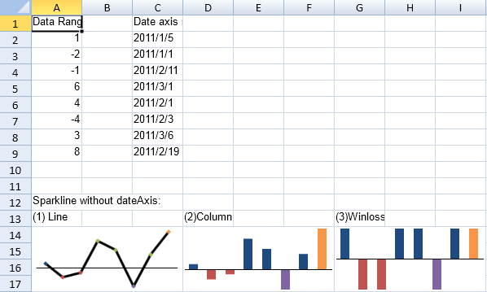

SpreadJS allows users to add sparklines to the cells of a worksheet. A sparkline is a small graph that fits inside a cell and uses data from a range of cells. With the help of sparklines, you can create a small graph in a cell that uses data from a range of cells.
Users can create different types of sparklines including column, line, winloss, pie, area, scatter, bullet, Spread, stacked, or custom sparklines.
You can use formulas to add pie, area, scatter, bullet, Spread, stacked, column, line, winloss, vbar, hbar, box plot, vari, cascade, pareto, or custom sparklines. You can use the setSparkline method to add column, line, or winloss sparklines. You can set the sparkline type to column, line, or winloss when using the setSparkline method. The data for the column, line, or winloss sparkline is limited to one column or row of values. You can use the addSparklineEx method with a formula to add a custom sparkline.
The column sparkline draws the values as a column chart. The line sparkline draws the values as a line chart. The winloss sparkline shows the points with the same size. Negative points extend down from the axis and positive points extend up. The pie sparkline draws the values as a pie chart. The scatter sparkline draws the values as a scatter chart. The area sparkline draws the values as an area chart.
The graphs can display colors for the marker points. You can set colors for the high, low, negative, first, and last points.

The graphs have horizontal and vertical axes.
Sparklines are stored as groups. A group contains at least one sparkline. You can group and ungroup sparklines.
For more information, see the following: